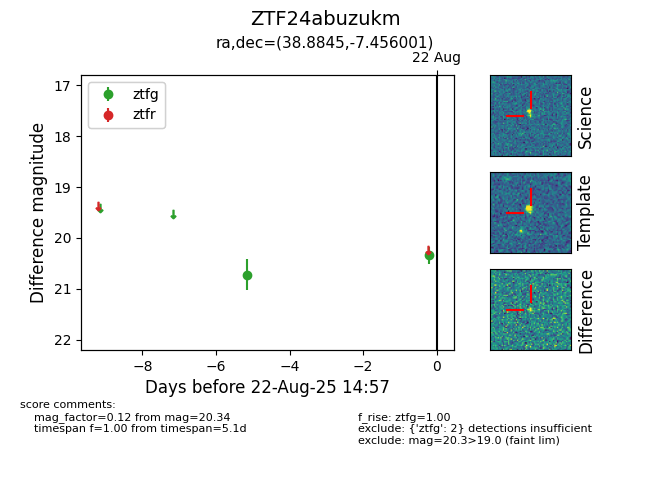

Target ZTF24abuzukm at 2025-08-22 14:57, see:
FINK: fink-portal.org/ZTF24abuzukm
Lasair: lasair-ztf.lsst.ac.uk/objects/ZTF24abuzukm
ALeRCE: alerce.online/object/ZTF24abuzukm
alt names
ZTF24abuzukm (ztf,alerce)
coordinates:
equatorial (ra, dec) = (38.8845,-7.45600)
galactic (l, b) = (179.1727,-58.44676)
photometry
last ztfg=20.34
2 ztfg detections
